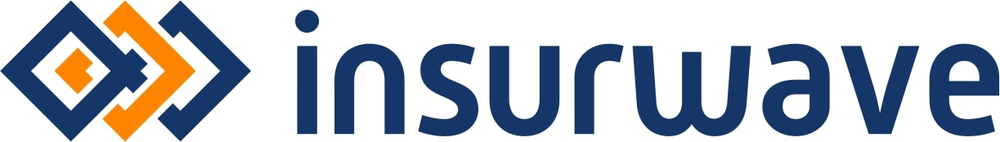
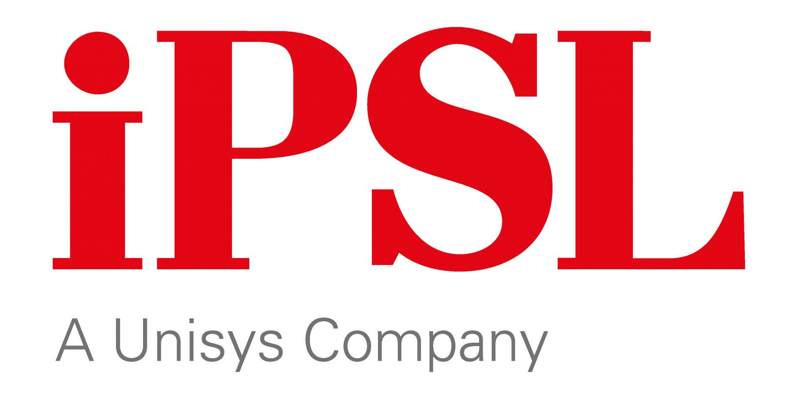

Employment
Current Employment:
Platform Engineer at Insurwave

February 2021 - Present
My current role is at Insurwave, a company developing a SaaS platform to modernise speciality insurance by connecting all participants. The company counts some of the biggest shipping companies in the world as its clients.
My role at Insurwave revolves around maintaining, improving, and automating all aspects of the platform. Every activity I have undertaken at Insurwave is completed in the most automated, secure, and resilient manner, so far this has led me to implement and maintain the following:
- All infrastructure and its integrity
- Streamline and bolster Azure Kubernetes Service Clusters
- Cost-effective autoscaling capabilities
- Provisioning whole new environments within minutes
- Decommissioning old systems
- CI/CD strategies via Azure DevOps
- Self-sufficient process to best support developers
- High-speed deployments without any delay
- Defining a structured and effective automated test process
- Integration of code analysis tools such 42Crunch
- Azure Resources
- Cosmos, ServiceBus, Log Analytics, Redis, Storage Accounts, Azure PostgreSQL, and more
- Regular automated rotation process for all keys
- Automated reprovisioning capabilities
- Backup and restore capabilities
- Authentication/Authorisation strategies
- Internally via Azure AD utilising rbac and spns
- Externally via Auth0
- Bespoke services to meet client needs
- Monitoring capabilities on all levels
- Service mesh monitoring via Kiali/Prometheus
- Cluster, Microservice and Azure resource monitoring via Grafana
- Alerts linked to Jira for timely incident process
- Disaster recovery processes
- Ensuring these are high-speed and cost-efficient
- Active/Passive implementation
Previous Employment:
DevOps Engineer at iPSL

August 2018 - February 2021
After working 2 years as a consultant I was made permanent at iPSL, a company handling cheque processing for Lloyds, HSBC, and Barclays. The main project I worked on was the migration from TFS over to Azure DevOps where I liaised with stakeholders to gather and then implement requirements, creating solutions for all issues presented and became the primary resource for the newly implemented toolset, involving:
- Improving development strategy
- Creation and implementation of git source code repositories and definition of branch strategy
- Defining branch policies to ensure required approvals and governances are adhered to
- Automating tasks within the business via coding/scripting
- Defining development approach (including Kanban + Scrum)
- Automation testing integration
- Conversion of Unit test framework and integration along with SonarCloud in CI Builds
- Integration/implementation of an in-house automation test framework
- Ensuring a smoother more regulated release strategy
- Definition of CI/CD Builds, pipelines/route to live, all required approvals, and environment configuration
- Assisting with the implementation of auto-deploy functionality
- Ensuring the adoption of new software/methodologies
- Training for 250+ users across the organisation, Including migration of TFS work items
- Setup and git training for 40+ developers
- Training for new testing approach/software for 70+ testers
Technical Consultant at Sparta Global

May 2018 - July 2020
After University I was hired by Sparta Global where I:
- Utilised my 14 weeks of SDET training to help migrate and automate aspects of testing in the business
- Established myself as an SME in helping the client adopt DevOps tools/methodologies
- Upskilled myself on client assignment around C#, PowerShell, and Azure Cloud Services
- Recognized as Sparta Global’s employee of the month August 2019
Volunteer Experience:
Computer Volunteer at Northfield Community Partnership

January 2018 - May 2018
As a way to help gain experience, improve my skills, and just help out I started volunteering at this local centre which specialises in helping anyone who is unemployed. Whilst there my responsibilities included:
training people who weren't confident with computers, helping staff with any computer or Wordpress issues they had, and any other tasks such as filing or helping with the food bank.